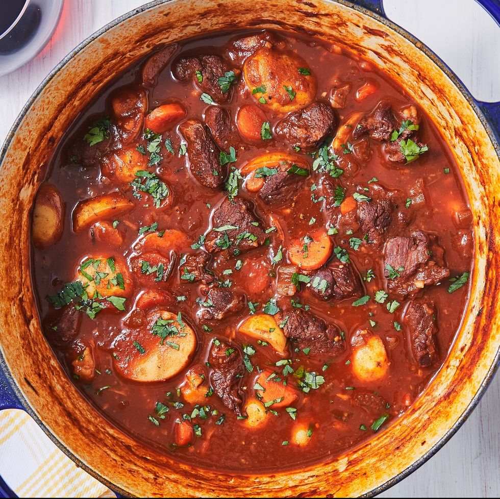

Lamb Stew

Description
This a is spicy lamb stew, served with potatoes and garnished with parsley.
Ingredients
- 1 tbsp. vegetable oil
- 2 lb. lamb shoulder roast, cubed into 1" pieces
- 1 onion, chopped
- 2 carrots, peeled and cut into rounds
- 2 stalks celery, chopped
- Kosher salt
- Freshley ground black pepper
- 3 cloves garlic, minced
- 1/4 c. tomato paste
- 1 tsp. ground cumin
- 1 tsp. smoked paprika
- 6 c. low-sodium beef broth
- 1 c. red wine
- 1 tbsp. Worcestershire sauce
- 3 sprigs fresh rosemary
- 2 bay leaves
- 2 lb. baby potatoes halved
- 1/4 c. freshley chopped parsley, for garnish
Steps
- In a large dutch oven or pot over medium-high heat, heat oil. Add lamb and cook on all sides until seared, 10 minutes, working in batches if necessary. Transfer to a plate.
- In the same pot, cook onion, carrots, and celery until soft, 5 minutes. Season with salt and pepper. Add garlic, tomato paste, cumin, and paprika and cook until garlic is fragrant and tomato paste has darkened, 2 minutes
- Add lamb back to dutch oven then add broth, wine, Worcestershire sauce, rosemary, and bay leaves.
- Bring to a boil then reduce heat to a simmer. Season with salt and pepper. Cover and let simmer until lamb is tender, 30 minutes.
- Add potatoes and simmer, covered, until potatoes are tender and stew has thickened, 30 minutes.
- Remove bay leaves and rosemary and garnish with parsley before serving.